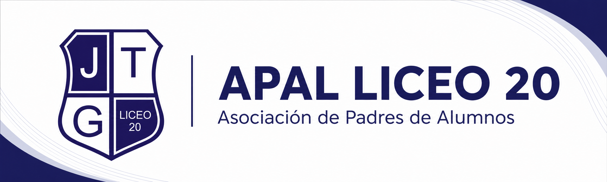

2026
Bienvenida a las familias
APAL Liceo 20 comienza una nueva etapa de comunicación con las familias para mejorar la participación, la organización y la transparencia.
Leer comunicado
Aviso institucional: Este sitio corresponde a APAL Liceo 20 y no sustituye los canales oficiales de Dirección del liceo.
APAL Liceo 20 es un espacio de participación de las familias que busca apoyar al liceo mediante colaboración, trabajo voluntario, mejoras edilicias, actividades y acompañamiento a la comunidad educativa.
APAL Liceo 20 está integrado por familias que desean colaborar con el liceo, aportando tiempo, trabajo, ideas, materiales o recursos económicos, según las posibilidades de cada una. Nuestro objetivo es contribuir a mejorar los espacios, fortalecer la comunidad educativa y acompañar las necesidades que puedan surgir durante el año.
Cada familia puede colaborar desde lo que sabe o desde el tiempo que tenga disponible. La suma de pequeños aportes permite lograr grandes mejoras para el liceo.
2026
APAL Liceo 20 comienza una nueva etapa de comunicación con las familias para mejorar la participación, la organización y la transparencia.
Leer comunicado2026
Estamos armando una base de familias que quieran colaborar en jornadas, reparaciones, actividades y apoyo general.
Leer comunicado2026
APAL publicará periódicamente información sobre ingresos, egresos y destino de los fondos recaudados.
Leer comunicadoLa transparencia es fundamental para APAL. Por eso se publicarán resúmenes periódicos de ingresos, egresos, saldos y destino de los fondos utilizados.
| Mes | Ingresos | Egresos | Saldo | Destino principal |
|---|---|---|---|---|
| Mayo 2026 | $0 | $0 | $0 | Inicio de actividades |
Los comprobantes y documentos públicos estarán disponibles en formato de solo lectura cuando corresponda.
Mejora de salones y áreas comunes con participación de familias voluntarias.
PróximamenteAcción comunitaria para acondicionar patios y zonas compartidas del liceo.
En cursoRecepción organizada de insumos prioritarios para mantenimiento y mejoras.
FinalizadaIniciativas para recaudar fondos y apoyar proyectos definidos por APAL.
PróximamenteEncuentros para informar avances, escuchar propuestas y sumar nuevas familias.
En cursoPara consultas, propuestas o interés en colaborar, podés comunicarte con APAL a través de los canales disponibles. Intentaremos responder a la brevedad.